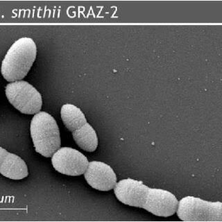

¿Quién es la responsable?
Methanobrevibacter smithii
Estas arqueas se pueden presentar en tu colon y tomarán el hidrógeno(H₂) y el dióxido de carbono(CO₂) que liberaron las otras bacterias al fermentar la fibra, y los transforman en gas metano (CH₄)

M. smithii
Microscopía electrónica de barrido
Microscopía electrónica de barrido